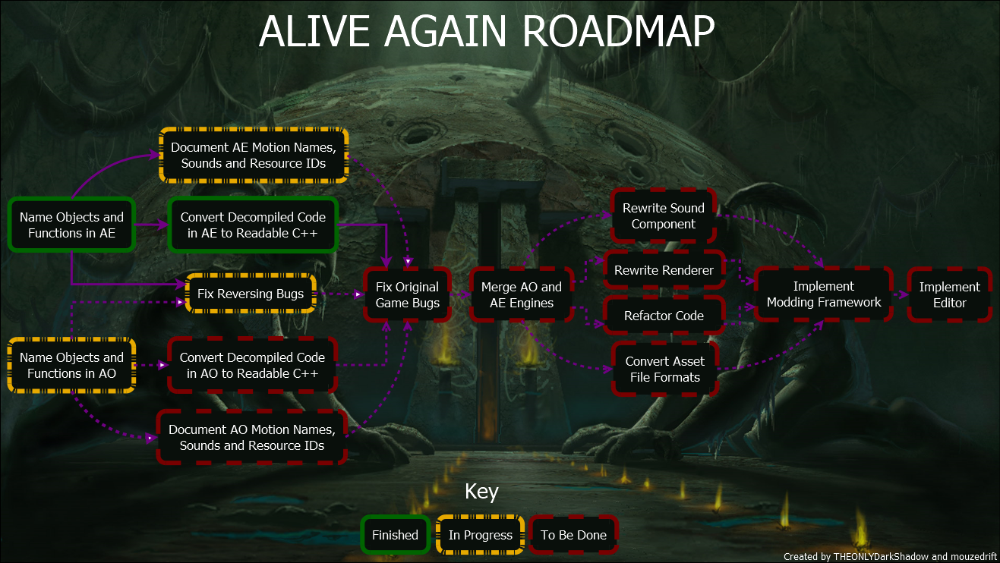
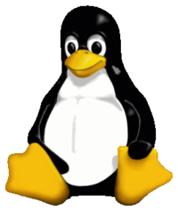
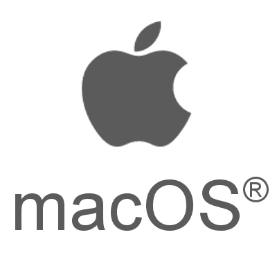

ReALIVE is an open-source reimplementation of the A.L.I.V.E. Engine used by Abe's Oddysee and Abe's Exoddus. It is created by a team of fans, intended to fix the problems and improve on Digital Dialect's aging PC port.
Click on the image to see it in full resolution!
Features:
- Natively supported windowed mode
- Freely changeable resolution
- Native support for Linux and MacOS
- Modern code and technology ensues, that the game works without issue on Windows
- Subtitles for cutscenes
- A fully open-sourced engine
Planned features:
- More platforms
- Fixing the original games' bugs
- Modding support
- Level editor
- Higher-resolution textures
- Feature requests by the community
Download:
- 

- 

Warning: This is an engine reimplementation, not the entire game. You still need to own the games to be able to use it. We do not provide nor endorse any illegal means to obtain these.